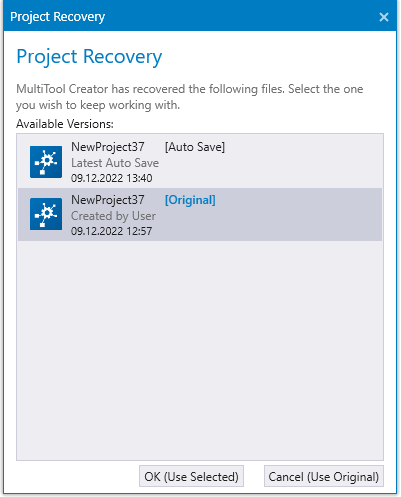

When opening a MultiTool Creator project and a newer, automatically saved version of the project file is found, MultiTool Creator asks which project file will be used.
By default, the original project file is selected. By selecting Cancel, the default file will be used. Autosave files will be deleted when the dialog is closed.
Define autosave settings in Settings.

Epec Oy reserves all rights for improvements without prior notice.
Source file topic200092.htm
Last updated 25-Jun-2025